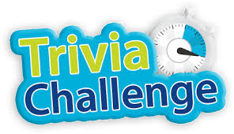
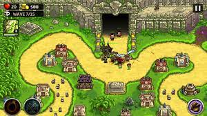
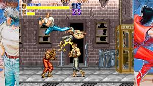

Trivia Challenge
📅 15/08/2025
Desafía tus conocimientos con preguntas de cultura general en este emocionante juego.
Trivia Challenge rompe récords de descargas en su primera semana. Los jugadores destacan su dinámica rápida, la variedad de categorías y la posibilidad de competir con amigos en tiempo real. Los desarrolladores anunciaron que pronto se agregarán nuevos niveles y recompensas para los usuarios más activos.

Maestro de Estrategia
📅 07/08/2025
Planifica, construye y domina el tablero en el nuevo juego de estrategia por turnos.
El juego Maestro de Estrategias se posiciona como el nuevo favorito entre los aficionados a los desafíos mentales. Con partidas que combinan planificación, astucia y rapidez, los jugadores pueden enfrentarse en línea y demostrar quién es el verdadero estratega. Los desarrolladores prometen torneos semanales y nuevas cartas y niveles para mantener la competencia siempre intensa.

Arcade Retro
📅 20/07/2026
Revive la experiencia clásica de los videojuegos de los 80 con este arcade renovado.
El juego Arcade Retro trae de vuelta la diversión de los videojuegos de los años 80 y 90, con gráficos pixelados y música nostálgica. Los jugadores pueden competir por puntajes altos y desbloquear niveles secretos inspirados en los clásicos. Su éxito ha generado una comunidad de fanáticos que comparten trucos y desafíos diariamente.